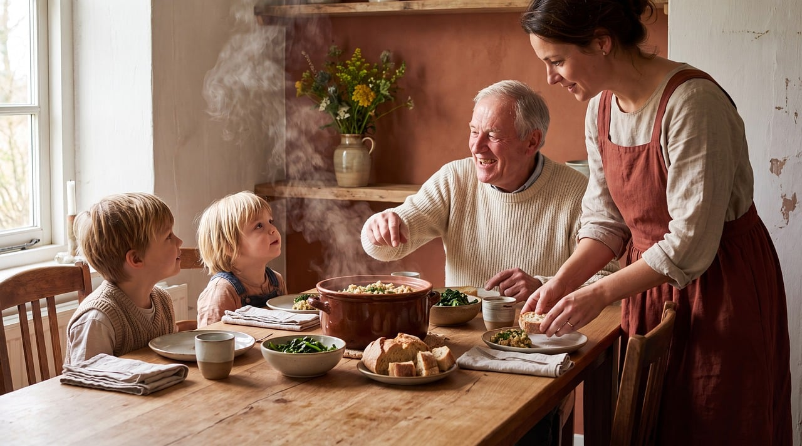
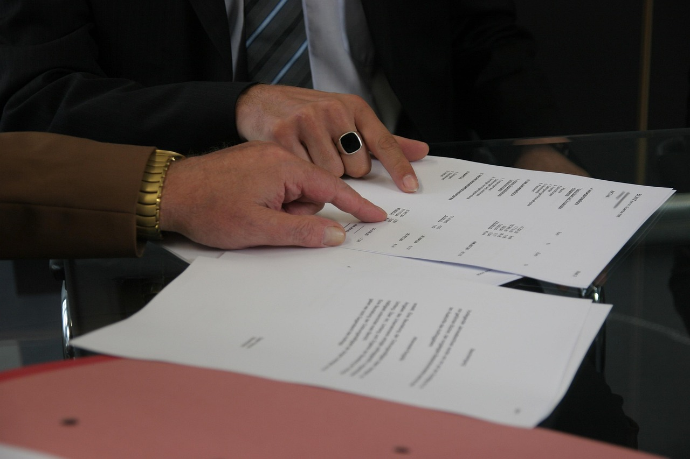

Work
Skilled Worker, senior specialist and intra-company routes, plus sponsor licences for employers. We work with you and your employer so the offer turns into a visa.
Typical file: 8 to 14 weeks
Crossings is an independent migration consultancy. We map your route, prepare your file, and stay with you until the decision.
Three routes
Most people arrive with one of three goals. Each has its own rules, its own evidence, and its own traps.
Skilled Worker, senior specialist and intra-company routes, plus sponsor licences for employers. We work with you and your employer so the offer turns into a visa.
Typical file: 8 to 14 weeks

Spouse, partner and dependent routes, and settlement for family members. Evidence, not volume, wins these cases.
Refusals usually come from evidence gaps. We check twice.
Student routes and the switch to work after graduation. We map the whole study-to-work path before you enrol.
One plan covers both ends of the journey.
Four stages. You always know which one you are in, and what the next one costs before it starts.
Thirty minutes, free. You tell us where you are and where you need to be. We tell you honestly whether the route exists.
A written plan: visa type, timeline, documents, costs, risks. Yours to keep, even if you never hire us.
We draft, gather and check every document against the rules in force, then review it with you line by line.
We track the application to the decision letter, then stay on for what comes next: compliance, renewal, or the next move.
They told us at the first call which parts of our file were weak. Nobody else had said it out loud.

Crossings is run by two former government caseworkers. Between them, Marta Ilyenko and Tom Ashworth have read thousands of applications from the other side of the desk.
Marta spent nine years in border-services casework. Tom managed appeals for an immigration law firm before crossing over. Both are qualified, regulated immigration advisers.
No outsourced drafting. No juniors learning on your case. The people who map your route are the people who file it.
The first call is free. After that we quote a fixed fee for your route before any work starts. No hourly billing, no surprise invoices.
No one can, and anyone who promises one is a warning sign. What we guarantee is that the file is complete, lawful and honest when it leaves us.
Often, yes. We read the refusal letter, tell you plainly what went wrong, and whether an appeal, a review or a fresh application is realistic.
No. Most of the work happens over video calls and shared folders. Evening calls across time zones are a normal part of the week here.
Tell us where you are and where you need to be. A few lines are enough for the first reply.
Book a consult